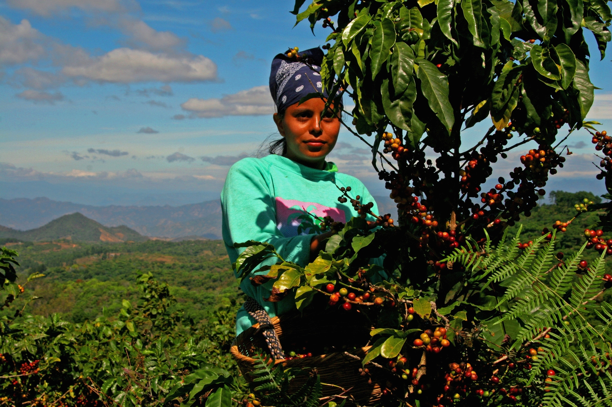

Information about coffee brewing and roasting.

A woman picks coffee in Guatemala. Photo by Rainforest Alliance Guatemala. License
Coffee starts as a cherry on the coffee plant, grown in tropical areas with an altitude between about 3,600 and 8,000 ft. Common locations for coffee growth and production include South America, Africa, and Southeast Asia.
It first must be picked, often by hand. Once the cherries are removed from the plant they must be processed by drying and removing the fruit, as what we know as coffee "beans" are actually the seeds of these cherries. This can be done a multitude of different ways and in either order. Each method of processing has different benefits and costs, both in terms of labor and resource use and in the flavor and quality of the final product.
Once the exterior has been removed and the coffee dried the coffee still needs to be milled. This means removing any remaining fruit from the bean. This is often done by machine, though sometimes is human powered. Sometimes the coffee has the remainder of the silver skin removed at this point as well. Finally the beans are cleaned and sorted, often by hand.
At this point, coffee is ready for sale to roasters. Some coffee plantations or cooperatives have begun roasting their own beans as a value-add.
{kind=link}